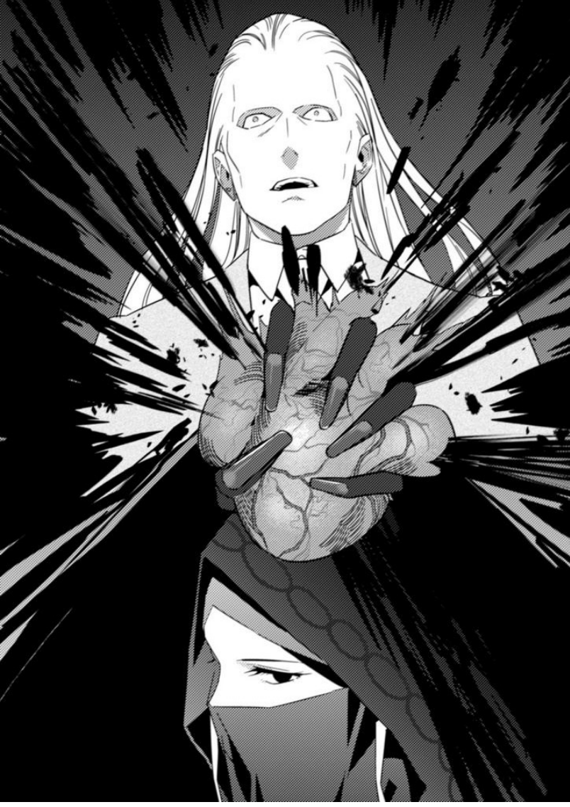

Fate/Strange Fake 1 Prólogo III
Em certa terra, certa vez viveu uma mulher de fé profunda.
Era só isso. Essa era a história inteira.
A devota era tão piedosa que agia como uma heterodoxa. Por isso, o povo a desprezava como fanática.
Pior ainda, até mesmo aqueles que adoravam o mesmo deus que ela a olhavam com desdém.
Mas a fanática não odiava as pessoas.
As pessoas só a odiavam porque sua fé ainda era fraca.
Ela não era piedosa o bastante. Era tão simples quanto isso.
A fanática seguiu adiante, exigindo cada vez mais de si mesma. Buscou os milagres criados por seus predecessores e recriou todos eles, um por um.
Mas sua fé ainda era fraca.
Fraca demais, muito, muito fraca.
Ou, pelo menos, era isso que a fanática ouvia, enquanto o mundo gritava para ela.
Todos os homens de fé passaram a rejeitá-la.
Minha fé é fraca.
Minha fé é fraca.
Minha fé é fraca.
No fim, a fanática não conseguiu fazer nada. Viveu como fanática e morreu como fanática. Não como mártir. Viveu uma vida vazia e então desapareceu.
Ainda assim, a fanática não guardava rancor do mundo.
Envergonhada da própria fé vacilante, entregou-se mais uma vez ao turbilhão da fé.
A fanática não sentia ódio pelas pessoas. Somente os deuses dos pagãos despertavam sua ira.
Assim viveu a fanática, irredimível aos olhos do povo comum.
Essa era a história toda.
Era assim que a história dela deveria terminar.
Até o momento em que o Graal falso escolheu a fanática.
Noite. Snowfield Oriental. Distrito dos Pântanos.
O distrito dos pântanos se estendia a leste do centro da cidade. Ali havia muitos lagos de águas cristalinas.
Entre esses lagos, existiam incontáveis pântanos. Uma rede de estradas costurava todo o distrito.
De todas as terras ao redor da cidade, a região leste, o Distrito dos Pântanos, provavelmente era a mais desenvolvida; ainda assim, quase não havia traços de civilização além de alguns pontos de pesca e casas de veraneio.
E, em um terreno específico, erguia-se uma enorme casa de veraneio.
Um Campo Limitado havia sido estabelecido ali. Mesmo que um homem comum conseguisse perceber a casa, não se sentiria inclinado a se preocupar com ela.
Arquitetonicamente falando, era de um mau gosto impressionante. Comparada à pousada à beira do lago um pouco mais a oeste, era gótica demais, toda projetada em motivos negros e cinzentos.
E, no porão da casa, havia vários magos. Eles tinham acabado de concluir um ritual de invocação.
A invocação fora um sucesso.
Tudo o que restava era responder afirmativamente à pergunta do Servo, concluindo assim o contrato.
Mas... isto é estranho.
O invocador, um mago chamado Jester Karture, observava com perplexidade o Espírito Heroico que havia convocado.
Cerca de dez de seus discípulos também estavam presentes.
E, no centro do círculo de invocação, erguia-se outra figura, claramente nem humana, nem maga.
Um ar de intimidação, infinito e puro, emanava de uma mulher solitária, envolta em mantos negros.
Ela parecia bastante jovem, mas era difícil ter certeza, já que mantinha o rosto voltado para o chão.
Naquele instante, Jester sentiu um forte pressentimento.
A invocação deveria ter trazido uma Assassin.
Em geral, é impossível escolher a classe na qual um Espírito Heroico será invocado.
Mas há exceções.
Com os preparativos e os encantamentos adequados, é possível optar por invocar Assassin ou Berserker, já que ambas possuem uma característica especial que permite isso.
Por isso, Jester escolheu invocar um Servo da classe Assassin.
Por sua própria natureza, apenas um pequeno número de Espíritos Heroicos pode ser convocado como Servos da classe Assassin; e, à primeira vista, o ser no centro do círculo de invocação parecia ser um desses Espíritos Heroicos, mas...
Eu estava sob a impressão de que Assassins sempre usam uma máscara branca de caveira...
Os Espíritos Heroicos da classe Assassin vestem-se todos com mantos negros e escondem o rosto sob uma máscara de caveira. Jester sabia disso por suas pesquisas anteriores.
Mas a mulher diante dele, embora envolta em tecido preto, não usava máscara branca. Seu rosto verdadeiro era visível entre as camadas do pano.
Nesse caso, sou eu que devo fazer a pergunta...?
Era a primeira vez que Jester de fato vivenciava uma Guerra do Santo Graal. Claro, aquela Guerra do Santo Graal era uma imitação desde o princípio. Era impossível prever de que maneiras ela diferiria da Guerra no Japão.
Em primeiro lugar, já era bizarro que os responsáveis por toda aquela guerra, os protagonistas do espetáculo, ainda não tivessem se revelado. Jester presumia que um clã ao menos tão renomado quanto os Einzbern estivesse envolvido na criação de algo tão grandioso e elaborado quanto aquela Guerra do Santo Graal, mas não sentia a presença de nenhum mago que se encaixasse nessa descrição.
Talvez estivessem se escondendo muito bem; ou talvez observassem de longe.
Jester deixou todas as suas dúvidas de lado e esperou o Servo se mover.
Então, a mulher de negro ergueu lentamente a cabeça. A figura de Jester se refletiu em suas pupilas.
"Eu lhe pergunto..."
Seu olhar era tão poderoso quanto intimidador: profundo e infinitamente negro, puro e imaculado.
O mago deixou escapar, sem querer, um murmúrio baixo enquanto soltava uma risadinha suave, esperando que o Servo continuasse falando.
"É você... o mago... que me invocou... para alcançar o Santo Graal?"
Ela roçou o pano negro que lhe envolvia a boca e falou de forma deliberada e delicada.
Aliviado por ela enfim ter falado, Jester deu um passo à frente. Transbordando confiança recém-adquirida, abriu os braços como se a recebesse naquele mundo.
"De fato, sou eu. E eu irei..."
"Batimento Delirante."
No instante em que ela falou, o tempo parou.
Jester sentiu algo roçar seu peito. Baixou os olhos para ver.
O que é ist...
E então viu algo vermelho à frente do próprio torso, e percebeu que aquilo, de fato, segurava alguma coisa vermelha, e então compreendeu que o objeto que ela segurava era, na verdade, seu coração, e ele não ergueu mais a cabeça. O corpo de Jester desabou no chão.
"Como...!?"
Ao verem o corpo do mestre subitamente ficar completamente imóvel, os discípulos de Jester entraram em pânico. Seus olhos se arregalaram enquanto contemplavam a situação se desenrolando.
Um terceiro braço, vermelho, brotara das costas da mulher. Estendia-se até o corpo de Jester, e ali, onde roçava o peito dele...
Que estranho. Aquela mão vermelha passou a segurar um coração... e então o esmagou. Os magos restantes alternavam o olhar entre o corpo do mestre e a mulher. Gritavam, em frenesi.

"S-sua desgraçada!"
"O que fez com Lorde Jester!?"
"Você não é um Servo!?"
Enquanto berravam em pânico, os magos empunharam armas e concentraram sua energia mágica com intensidade.
Fitando sem emoção os discípulos de Jester, a mulher vestida de negro disse apenas uma coisa.
De fato, era efêmero.
"Nosso Deus, o mais misericordioso... não possui cálice..."
Talvez a tenham ouvido, talvez não. De todo modo, um dos homens sacou uma adaga de aparência mágica e saltou na direção dela, tentando atravessá-la pelas costas.
E então... Um som úmido e aberrante ecoou pela câmara quando seus ombros começaram a se deformar.
Seu braço esquerdo se esticou para trás num ângulo anormal, tocou-o com extrema suavidade e... "Fantasia Cibernética."
Imediatamente, a cabeça dele explodiu em chamas e se espalhou por toda parte, acompanhada de um estrondo, como se a própria cabeça tivesse se tornado uma bomba.
Ao ouvirem a explosão e verem o clarão, todos os magos recuaram aterrorizados.
Só dois deles haviam morrido, mas isso bastou para convencê-los de que lidavam com um Servo verdadeiro: um ser contra o qual eram totalmente impotentes.
"Eu purificarei... os magos hereges..."
Falando devagar, ela ficou imóvel por alguns segundos.
Parecia estar lhes dando tempo para fugir, mas eles não fugiram. Em uníssono, saltaram para trás e lançaram toda a força de suas energias mágicas sobre a mulher.
Ao testemunhar aquela cena lamentável, o Servo de mantos negros balançou lentamente a cabeça, com um olhar quase desolado...
E, ainda assim, sem o menor traço de misericórdia, pronunciou palavras de poder.
"Ícor do Devaneio."
E então... o silêncio desceu sobre a câmara.
O Servo vestido de negro ficou cercado pelos cadáveres dos magos.
Todos os que tentaram descarregar energia mágica sobre ela foram, por algum motivo, consumidos pelas próprias chamas violentas. Seus restos ficaram espalhados pelo chão.
A única que fazia ideia do que acontecera era a própria Serva. Ainda em silêncio, ela subiu apressada as escadas para fora do porão.
Retornou à forma espiritual e, invisível a todos, disparou pela escuridão da noite. Ela, que antes não tinha direção alguma na vida, enfim encontrara um propósito claro.
A fanática buscava uma prova.
Prova de que era verdadeiramente uma pessoa de fé; prova de que pertencia ao povo de Alá. Nada além disso.
Foi só muito, muito depois que percebeu que a própria busca por uma prova já era evidência de que sua fé era fraca.
Quando jovem, ela se lapidou para conquistar um nome, um nome que servisse de prova de sua fé.
Para alcançar esse nome, que comprovaria sua devoção, precisaria obter poder, poder suficiente para realizar um milagre divino.
No entanto, só um tipo muito específico de milagre serviria.
Tinha de ser um milagre capaz de trazer a morte com rapidez e certeza; um milagre maior que qualquer um conhecido por um zindiq ou mohareb.
Ela era membro de uma seita que perseguia tais milagres: os Hashshashin, um culto fanático por natureza.
Mesmo nos círculos mais internos do culto, porém, ela era desprezada como fanática entre fanáticos.
Todos os antigos grão-mestres do culto haviam realizado um milagre portando o nome de Shaytan e, assim, conquistado seus títulos.
Cada um deles ficou chocado com os feitos dela.
Nenhum estava preparado para acreditar no que tinha visto. Ela era apenas uma jovem garota, um mero cordeiro...
Como poderia dominar todos os milagres realizados pelos dezoito grão-mestres anteriores?
Não havia dúvida de que ela se refinara por meio do mais hercúleo dos esforços.
Escusado dizer que, nesse processo, derramara muito de seu sangue puro e incorrupto.
E, ainda assim, o povo de sua seita não a reconhecia como grão-mestre.
"O que você realizou? Imitou milagres já realizados. Isso não passa de repetição mecânica. É porque sua fé é fraca que você é incapaz de trazer à tona um milagre concebido por você mesma." Ela de fato era talentosa.
Ou seja, tinha talento suficiente para dominar as habilidades de todos os grão-mestres do passado. Tinha força para suportar a dor pela qual passava ao mortificar a própria carne. Tinha firmeza para enfrentar qualquer provação por meio da força e da vontade. Mas não possuía o talento necessário para provocar um milagre nascido de sua própria invenção.
Isso era apenas metade do problema. Sua capacidade de dominar tantos milagres, quando dominar um só já tomaria a vida inteira de uma pessoa comum, essa era a outra metade. O povo talvez a temesse, sabendo que ela conseguira realizar tais milagres em questão de anos.
"E, por isso, sua fé é fraca. Não podemos conceder o título de grão-mestre a alguém como você."
Aquele argumento era mera sofística. E, ainda assim, ela o aceitou por completo.
Entendo. Minha fé não é profunda o bastante.
O quanto ainda me falta aprender. Eu envergonhei os milagres dos antigos grão-mestres.
Ela não ressentia ninguém. Apenas continuou refinando as próprias habilidades.
E, quando um novo grão-mestre, o Cem Faces, foi escolhido... ela viu que ele era capaz de todo tipo de coisa que ela mesma não podia fazer, mas não o invejou. Sentiu apenas vergonha da própria impiedade.
No fim, a fanática não encontrou prova alguma de sua fé e desapareceu nas brumas do tempo.
Ou assim deveria ter sido. Mas que capricho do destino. Quando foi invocada pelo homem chamado Jester, recebeu do Santo Graal o conhecimento do mundo e imediatamente compreendeu seu destino.
Ela precisava reduzir o Santo Graal, aquele emblema da heresia, a nada. Era só isso que desejava.
E, embora soubesse que todos os antigos grão-mestres também o buscaram, sentia apenas tristeza.
Ela não os ressentia. Tampouco os condenava.
Sem dúvida, a fé deles era mais profunda que a dela. Ainda agora, eram dignos de seu respeito.
Seu ódio se dirigia àquilo que os havia desviado: a Guerra do Santo Graal.
Ela precisava pôr um fim nela. Rasgou a escuridão da noite, apressando-se em busca do Santo Graal.
Tendo matado aqueles magos, em breve perderia seu suprimento de energia mágica.
Ainda recebia energia mágica, mas era apenas um fio.
Quando esse fluxo cessasse por completo, ela desapareceria.
Isso aconteceria em alguns dias? Algumas horas? Alguns segundos, até...?
Mas não importava.
Até seu último instante, mesmo que seu corpo fosse só uma aparição, a Assassin sem nome não questionaria seu propósito.
Acreditando que a devoção de ao menos aqueles que, como ela, tinham sido fiéis seria recompensada, ela, sem um momento de hesitação, tomou a própria Guerra do Santo Graal como inimiga.
Alguns minutos depois.
No porão da casa à beira do lago onde o Espírito Heroico sem nome fora invocado, não havia homens; apenas cadáveres.
Quando Assassin foi embora, isso se tornou ainda mais verdade.
"Kha!"
Uma risada límpida ecoou.
Mas a verdade era o que era.
Naquela sala, não havia homens; apenas cadáveres.
"Khaa! Ha ha ha ha ha ha!"
Um acesso de gargalhadas reverberou. Soava como o riso de uma criança, jubiloso do fundo do coração; mas, ao mesmo tempo, era distorcido, de algum modo perverso.
Mas a verdade ainda era o que era.
Naquela sala, não havia homens; apenas cadáveres.
"Uau, essa me pegou de surpresa! Pensar que o Santo Graal me traria uma figurinha tão maluquinha e fora da curva!"
O homem se ergueu como uma mola saltando da caixa, os Selos de Comando em sua mão direita ainda brilhando.
"Como é belo..."
Eu estava planejando despertar a Aranha com o poder do Graal e viver para ver este mundo tedioso ser destruído, mas...
Eu não fazia ideia de que ainda tinha "emoções", esses vestígios de humanidade!
Ele tremia, assolado pelas emoções, e a verdade seguia sendo o que era.
Naquela sala, não havia homens; apenas cadáveres.
Se a verdade era essa, só podia significar uma coisa. O mago Jester Karture, agora sufocado pela emoção, era, naquele momento, um cadáver.
"Que pathos! Que beleza! Que encanto, que esplendor, que delicadeza, que pitoresco, que graça! Ah, que erro trágico cometi. Quando eu tinha tanto tempo e tão pouco o que fazer, deveria ter dominado a Ars Poetica! Não encontro palavras para descrever a piedade dela!"
Jester estava se divertindo como nunca. Sem dar a menor atenção aos cadáveres espalhados pela sala, começou a desabotoar a camisa. Emblemas de aparência mágica surgiram em seu peito nu, emblemas totalmente diferentes dos Selos de Comando.
Era um anel formado por seis marcas vermelhas, semelhantes ao tambor de um revólver de seis tiros.
No entanto, uma das seis marcas, a mais próxima de seu peito esquerdo, havia escurecido.
"Ela esmagou meu núcleo conceitual com tanta facilidade! Fui o mais cauteloso possível! E não fez a menor diferença! Com aquele braço, ela poderia reduzir a nada até um ser muito mais forte do que eu!"
Jester tocou a marca escurecida com um dedo, e a ponta do dedo foi sugada para dentro da pele de seu peito. Estranhamente, não caiu uma única gota de sangue da marca. Ele enfiou a mão até o pulso naquele lodo cor de carne e remexeu as próprias entranhas.
"Minha alma de mago foi completamente destruída."
Então, como uma engrenagem, ou melhor, como o tambor de um revólver, as seis marcas giraram, quase como se se contorcessem. A marca escurecida se deslocou até o flanco esquerdo, carregando uma nova marca vermelha sobre o peito esquerdo.
"Nesse caso, acho melhor vestir um rosto novo daqui em diante."
E então, de algum modo, assim como aquelas seis marcas tinham se movido, seu corpo e seu rosto pulsaram. Um instante depois, ele tinha a aparência de um homem completamente diferente.
Retirou o dedo do peito e o pousou sobre o selo escurecido em sua lateral. Encontrava-se em êxtase enquanto esfregava o dedo ao redor dele.
"Aquele núcleo conceitual estava protegido por incontáveis camadas de magia defensiva. E, apesar disso, ela reduziu tudo aquilo a menos que nada com aquele braço vermelho. Seus dedos alcançaram o âmago do meu ser... Um braço tão simples e, ainda assim, tão diabólico! E, no entanto, justamente por isso, é belo! Um Fantasma Nobre, que coisa magnífica!"
Continuou falando aos cadáveres espalhados ao redor, com uma voz clara e ressonante. Claro, eles não responderam.
"Surpreende-me que ela tenha conseguido usar aquela técnica assustadora sem hesitar, e tantas vezes assim. Se ela tivesse acesso apenas à energia de qualquer outro mago, um mago comum, diferente de mim... certamente teria se esgotado quase de imediato."
Mostrou as presas anormalmente afiadas ao altar de cadáveres. Continuava falando sozinho numa voz tonitruante e quase sedutora.
"Acho que ainda não preciso me cansar do mundo... Aquela bela assassin! A piedade dela! Eu jamais poderia permitir que desaparecesse sem um nome!"
Aquilo era uma afirmação que só poderia ser feita por alguém que tivesse visto as memórias dela.
Por meio do elo de energia mágica que ligava Mestre e Servo, o primeiro podia ver os pensamentos e as memórias do segundo como se fossem sonhos.
"Claro que não! Quem ousaria desperdiçar algo assim!?"
Se Jester estivesse falando a verdade, isso significava que ele havia aprendido sobre a fé dela por meio de um sonho que teve enquanto estava morto, mas...
"Eu lhe darei um nome! Seu belo rosto; sua bela alma; seu belo poder; sua bela fé... Eu vou profaná-los, conspurcá-los, rebaixá-los, corrompê-los..."
"...e degradá-los por completo! Que prazer maior poderia existir!?"
Ele gargalhou com gosto. Seu semblante foi adquirindo aos poucos um tom perverso.
"Ó prazer! Ó impermanência! Ó beleza! Farei aquela bela Serva se ajoelhar diante de mim, destruirei sua fé e, quando tiver drenado o último resquício de seu poder, ah, que visão isso será!"
O coração de Jester batia em ritmo eufórico quando uma sombra se estendeu a partir do chão sob seus pés.
Era uma sombra vermelha, de um vermelho tão profundo quanto os emblemas em seu peito.
Quando a sombra enfim se enrolou ao redor dos corpos de todos os discípulos de Jester, desligou-se do chão e se tornou uma onda carmesim que engoliu os incontáveis cadáveres.
E então, de imediato, a sombra recuou de volta para o corpo de Jester. Ao fazê-lo, estava ainda mais vermelha do que antes.
Em poucos segundos, os corpos tinham sido reduzidos a meros esqueletos por aquela sombra inexorável.
"O Santo Graal? A destruição do mundo? Essas coisas também são maravilhosas, concedo! Mas que ninharias! São puro lixo diante do desespero dela!"
E então... Ele, um cadáver vivo, um vampiro, atingiu o clímax ao imaginar o gosto do sangue da Serva, enquanto seus olhos mortos brilhavam com uma vida intensa.
"Como hereges companheiros nesta terra, sejamos os melhores amigos! Khaa... Khahahahahahahahaha hahaha!"
E assim, sem sequer um contrato adequado os ligando, o Mestre de Assassin infundiu a Guerra do Santo Graal com uma escuridão tóxica. Rindo e rindo e...